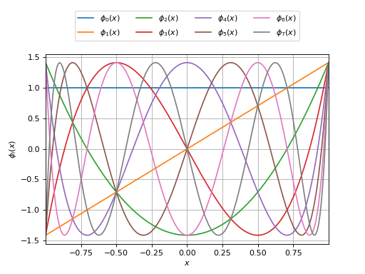

ChebychevFactory¶
(Source code, png)
{kind=link}

- class ChebychevFactory(*args)¶
Chebychev specific orthonormal univariate polynomial family.
For the
Arcsinedistribution.- Available constructors:
Chebychev()
Notes
Any sequence of orthogonal polynomials has a recurrence formula relating any three consecutive polynomials as follows:
![P_{i + 1} = (a_i x + b_i) P_i + c_i P_{i - 1}, \quad i > 0]()
The recurrence coefficients for the Chebychev polynomials come analytically and read
 ,
,  and for
and for  ,
,  .
.Examples
>>> import openturns as ot >>> polynomial_factory = ot.ChebychevFactory() >>> for i in range(3): ... print(polynomial_factory.build(i)) 1 1.41421 * X -1.41421 + 2.82843 * X^2
Methods
build(degree)Build the
 -th order orthogonal univariate polynomial.
-th order orthogonal univariate polynomial.buildCoefficients(degree)Build the
-th order orthogonal univariate polynomial coefficients.Build the recurrence coefficients.
Accessor to the object's name.
getId()Accessor to the object's id.
Accessor to the associated probability measure.
getName()Accessor to the object's name.
Build the
-th order quadrature scheme.Accessor to the recurrence coefficients of the
-th order.getRoots(n)Accessor to the recurrence coefficients of the
-th order.Accessor to the object's shadowed id.
Accessor to the object's visibility state.
hasName()Test if the object is named.
Test if the object has a distinguishable name.
setName(name)Accessor to the object's name.
setShadowedId(id)Accessor to the object's shadowed id.
setVisibility(visible)Accessor to the object's visibility state.
- __init__(*args)¶
- build(degree)¶
Build the
-th order orthogonal univariate polynomial.- Parameters:
- kint,

Polynomial order.
- kint,
- Returns:
- polynomial
OrthogonalUniVariatePolynomial Requested orthogonal univariate polynomial.
- polynomial
Examples
>>> import openturns as ot >>> polynomial_factory = ot.HermiteFactory() >>> print(polynomial_factory.build(2)) -0.707107 + 0.707107 * X^2
- buildCoefficients(degree)¶
Build the
-th order orthogonal univariate polynomial coefficients.- Parameters:
- kint,
Polynomial order.
- kint,
- Returns:
- coefficients
Point Coefficients of the requested orthogonal univariate polynomial.
- coefficients
Examples
>>> import openturns as ot >>> polynomial_factory = ot.HermiteFactory() >>> print(polynomial_factory.buildCoefficients(2)) [-0.707107,0,0.707107]
- buildRecurrenceCoefficientsCollection(degree)¶
Build the recurrence coefficients.
Build the recurrence coefficients of the orthogonal univariate polynomial family up to the
-th order.- Parameters:
- kint,
Polynomial order.
- kint,
- Returns:
- recurrence_coefficientslist of
Point All the tecurrence coefficients up to the requested order.
- recurrence_coefficientslist of
Examples
>>> import openturns as ot >>> polynomial_factory = ot.HermiteFactory() >>> print(polynomial_factory.buildRecurrenceCoefficientsCollection(2)) 0 : [ 1 0 0 ] 1 : [ 0.707107 0 -0.707107 ]
- getClassName()¶
Accessor to the object’s name.
- Returns:
- class_namestr
The object class name (object.__class__.__name__).
- getId()¶
Accessor to the object’s id.
- Returns:
- idint
Internal unique identifier.
- getMeasure()¶
Accessor to the associated probability measure.
- Returns:
- measure
Distribution The associated probability measure (according to which the polynomials are orthogonal).
- measure
Notes
Two polynomials P and Q are orthogonal with respect to the probability measure
 if and only if their dot product:
if and only if their dot product:![\langle P, Q \rangle = \int_{\alpha}^{\beta} P(x) Q(x) w(x)\di{x}
= 0]()
where
 and
and
 .
.Examples
>>> import openturns as ot >>> polynomial_factory = ot.HermiteFactory() >>> print(polynomial_factory.getMeasure()) Normal(mu = 0, sigma = 1)
- getName()¶
Accessor to the object’s name.
- Returns:
- namestr
The name of the object.
- getNodesAndWeights(n)¶
Build the
-th order quadrature scheme.Associated with the orthogonal univariate polynomials family.
- Parameters:
- kint,

Polynomial order.
- kint,
- Returns:
Examples
>>> import openturns as ot >>> polynomial_factory = ot.HermiteFactory() >>> nodes, weights = polynomial_factory.getNodesAndWeights(3) >>> print(nodes) [-1.73205,...,1.73205] >>> print(weights) [0.166667,0.666667,0.166667]
- getRecurrenceCoefficients(n)¶
Accessor to the recurrence coefficients of the
-th order.Of the orthogonal univariate polynomial.
- Parameters:
- kint,
Polynomial order.
- kint,
- Returns:
- recurrence_coefficients
Point The recurrence coefficients of the
-th order orthogonal
univariate polynomial.
- recurrence_coefficients
Notes
Any sequence of orthogonal polynomials has a recurrence formula relating any three consecutive polynomials as follows:
![P_{-1}=0, P_0=1, P_{n + 1} = (a_n x + b_n) P_n + c_n P_{n - 1}, \quad n > 1]()
Examples
>>> import openturns as ot >>> polynomial_factory = ot.HermiteFactory() >>> print(polynomial_factory.getRecurrenceCoefficients(3)) [0.5,0,-0.866025]
- getRoots(n)¶
Accessor to the recurrence coefficients of the
-th order.Of the orthogonal univariate polynomial.
- Parameters:
- kint,

Polynomial order.
- kint,
- Returns:
- roots
Point The roots of the
-th order orthogonal univariate polynomial.
- roots
Examples
>>> import openturns as ot >>> polynomial_factory = ot.HermiteFactory() >>> print(polynomial_factory.getRoots(3)) [-1.73205,...,1.73205]
- getShadowedId()¶
Accessor to the object’s shadowed id.
- Returns:
- idint
Internal unique identifier.
- getVisibility()¶
Accessor to the object’s visibility state.
- Returns:
- visiblebool
Visibility flag.
- hasName()¶
Test if the object is named.
- Returns:
- hasNamebool
True if the name is not empty.
- hasVisibleName()¶
Test if the object has a distinguishable name.
- Returns:
- hasVisibleNamebool
True if the name is not empty and not the default one.
- setName(name)¶
Accessor to the object’s name.
- Parameters:
- namestr
The name of the object.
- setShadowedId(id)¶
Accessor to the object’s shadowed id.
- Parameters:
- idint
Internal unique identifier.
- setVisibility(visible)¶
Accessor to the object’s visibility state.
- Parameters:
- visiblebool
Visibility flag.